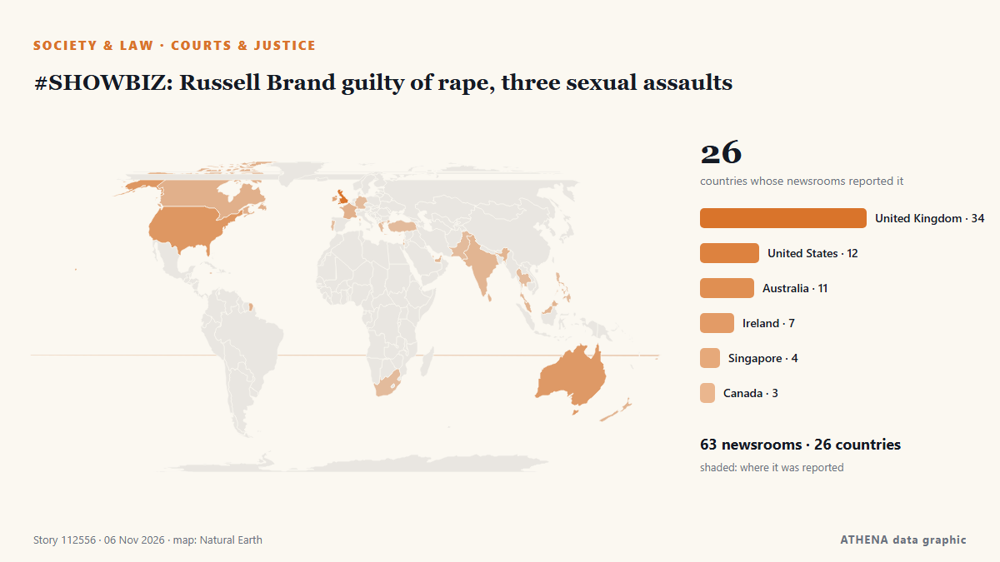

#SHOWBIZ: Russell Brand guilty of rape, three sexual assaults

The jury in the Russell Brand rape trial begins its deliberations in London after more than three weeks of evidence. from ABC News Australia
Reported independently by 65 outlets in 26 countries since 3 Nov, first by ABC News Australia; coverage is fading. ATHENA rates the risk moderate (2.8/10), driven mainly by the severity of the harm described and its geographic and sector reach. Confidence is 89% (high), with 65 independent outlets corroborating it and an average source reliability of 72%. Outlets by country: United Kingdom (15), United States (7), Ireland (4). Coverage: 3 Nov to 5 Nov, 48 hours.
Why it matters: Legal and policy changes alter rights, obligations and public services for the people they reach.
What changed: 90 new reports from 60 outlets in the 24 hours to 6 Nov.
First reported as: Jury retires to consider verdicts in Russell Brand trial
At a glance
Selected, scored and written by ATHENA's published methodology. No editor intervenes in individual events. How this is produced ›
| 03 Nov 14:54 UTC | 9 |
|---|---|
| 03 Nov 17:54 UTC | 1 |
| 03 Nov 20:54 UTC | 0 |
| 03 Nov 23:54 UTC | 0 |
| 04 Nov 02:54 UTC | 1 |
| 04 Nov 05:54 UTC | 0 |
| 04 Nov 08:54 UTC | 1 |
| 04 Nov 11:54 UTC | 0 |
| 04 Nov 14:54 UTC | 0 |
| 04 Nov 17:54 UTC | 0 |
| 04 Nov 20:54 UTC | 0 |
| 04 Nov 23:54 UTC | 0 |
| 05 Nov 02:54 UTC | 0 |
| 05 Nov 05:54 UTC | 0 |
| 05 Nov 08:54 UTC | 2 |
| 05 Nov 11:54 UTC | 35 |
| 05 Nov 14:54 UTC | 34 |
| 05 Nov 17:54 UTC | 11 |
| 05 Nov 20:54 UTC | 0 |
| 05 Nov 23:54 UTC | 4 |
| 06 Nov 02:54 UTC | 2 |
| 06 Nov 05:54 UTC | 2 |
| 06 Nov 08:54 UTC | 2 |
| 03 Nov 15:58 UTC | 0.0 |
|---|---|
| 05 Nov 14:36 UTC | 1.2 |
| 05 Nov 15:03 UTC | 2.0 |
| 05 Nov 15:14 UTC | 2.7 |
| 06 Nov 10:37 UTC | 2.8 |
Why these numbers
Importance
Risk
Confidence
The reporting — who reported it, and when
headline as published · opens the original- ABC News Australia · AustraliaThe key takeaways from Russell Brand's trial as jurors consider their verdict
- The Canadian Press (via CityNews) · CanadaJury begins deliberating at Russell Brand’s rape and sexual assault trial
- Belfast Telegraph · United KingdomJury retires to consider verdicts in Russell Brand trial
- The Irish News (Belfast) · United KingdomJury retires to consider verdicts in Russell Brand trial
- Gulf News · United Arab EmiratesJury begins deliberating at Russell Brand's rape and sexual assault trial
- Stuff · New ZealandJury begins deliberating at Russell Brand's rape and sexual assault trial
- The Straits Times · SingaporeJury begins deliberations in Russell Brand's UK sexual offences trial
- Deadline · United StatesRussell Brand Trial: Jury Begins Verdict Deliberations
- Rolling Stone · United StatesJury Begins Deliberation in Russell Brand’s Rape and Sexual Assault Trial
- Manchester Evening News · United KingdomRussell Brand jury to consider verdicts in rape case involving six women across 10-year period
- FBC News · FijiJury begins deliberating at Russell Brand’s rape and sexual assault trial
- Evening Standard (London) · United KingdomWho is Laura Gallacher? Russell Brand’s wife stuck by convicted rapist husband during trial
- Israel Hayom (English) · IsraelRussell Brand found guilty of rape in London court
- Express Tribune · PakistanRussell Brand found guilty by UK court of rape and sexual assaults
- Deadline · United StatesRussell Brand Found Guilty Of Rape & Sexual Assault
- The Canadian Press (via CityNews) · CanadaRussell Brand convicted of rape and sexual assault
- Variety · United StatesRussell Brand Found Guilty of Rape and Sexual Assault at London Trial; Taken Into Custody
- TheJournal.ie · IrelandRussell Brand convicted of rape and multiple sexual assaults by London court
- The Herald (Scotland) · United KingdomRussell Brand found guilty as two new rape complaints emerge
- RTÉ News · IrelandRussell Brand found guilty of rape, sexual assaults
- Evening Standard (London) · United KingdomRussell Brand found guilty of rape and sexual assaults
- The Straits Times · SingaporeComedian Russell Brand found guilty by UK court of rape and sexual assaults
- Rolling Stone · United StatesRussell Brand Found Guilty in Rape Trial
- The Scotsman · United KingdomRussell Brand found guilty of rape and sexual assaults
- The Hollywood Reporter · United StatesRussell Brand Found Guilty of Rape and Sexual Assault at London Trial
- Manchester Evening News · United KingdomRussell Brand guilty of rape and sexual assault following trial
- WalesOnline · United KingdomRussell Brand found guilty of rape and sexual assault - live updates
- Liverpool Echo · United KingdomRussell Brand guilty of rape and multiple counts of sexual assault
- Irish Mirror · IrelandRussell Brand found guilty of raping fan and sexually assaulting three women
- France 24 English · FranceBritish comedian Russell Brand found guilty of rape, sexual assault
- NBC News (World) · United StatesRussell Brand found guilty of rape and sexual assault
- Irish Examiner · IrelandRussell Brand faces prison after being found guilty of rape and sexual assaults
- BBC News · United KingdomWatch: How rapist Brand was never far from controversy
- ABC News Australia · AustraliaRussell Brand found guilty of rape and sexual assault
- Birmingham Mail · United KingdomRussell Brand found guilty of rape and sexual assault
- MyLondon · United KingdomRussell Brand found guilty of rape and sexual assault
- Screen Daily · United KingdomRussell Brand found guilty of rape and sexual assault
- CBC News (alternative feed) · CanadaRussell Brand convicted of rape and sexual assault
- Indian Express · IndiaRussell Brand found guilty of rape and sexual assault
- Bristol Post · United KingdomRussell Brand found guilty as comedian is immediately jailed by judge